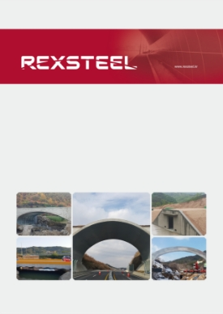
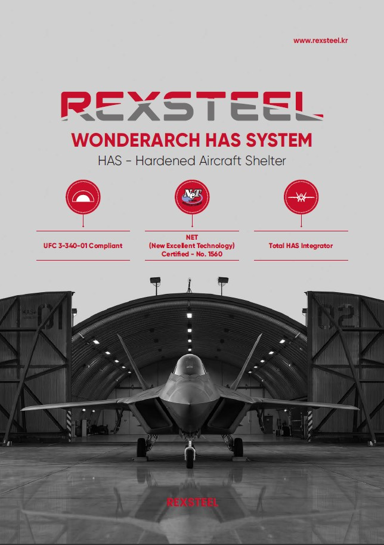
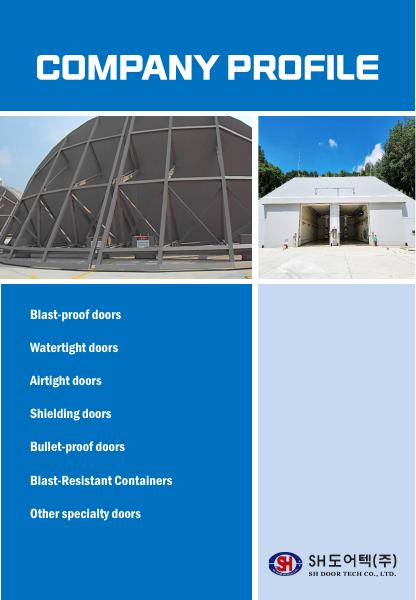

PDF CATALOG
REXSTEEL
ألواح الفولاذ المموج الإنشائية · التطبيقات
مراجع منتجات REXSTEEL ومجموعة Daehan Steel Pipe في مكان واحد.
استعرض المستند أو نزّله بصيغة PDF.
تُبيّن لغة كل مستند مع رابط التنزيل. ملفات PDF وشاشات البرامج والنصوص داخل الصور تبقى بلغتها الأصلية.

ألواح الفولاذ المموج الإنشائية · التطبيقات

بطانات الأقواس الفولاذية · ملاجئ الطائرات

أنابيب الفولاذ المموج · تغليف NPE · الوصلات


تشكيلة المنتجات · NET · تصنيف المنتج المبتكر

أبواب مقاومة للانفجار · مانعة لتسرب المياه · محكمة للهواء · خاصة
كتيّب شريكنا للأبواب المقاومة للانفجار SH DOOR TECH